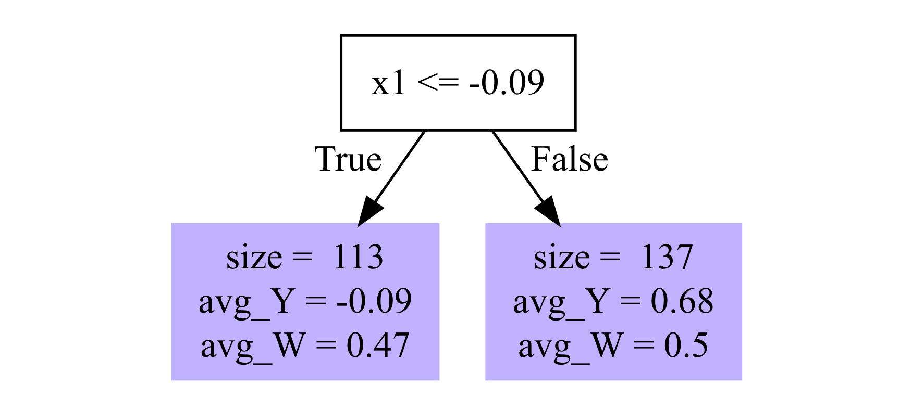
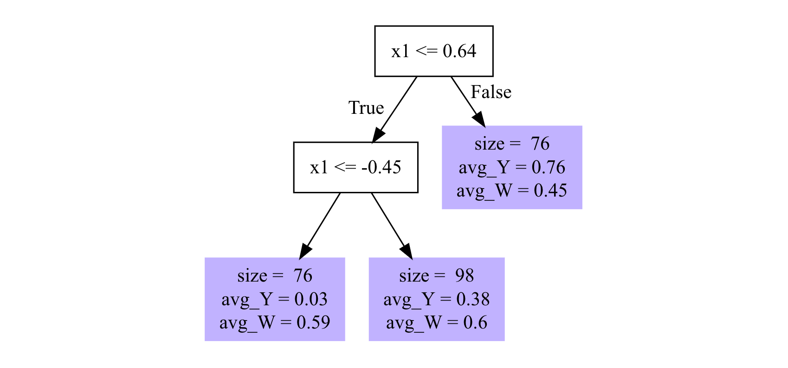

library(data.table)
library(tidyverse)
library(grf)Forest-based CATE Estimators
In ?@sec-het-dml, we saw a special case of R-learner/DML where the final model is a linear-in-parameter model. Here, we learn two methods that estimate CATE non-parametrically: causal forest [@athey2019generalized] and orthogonal forest [@oprescu2019orthogonal].
Model
The heterogeneous treatment effect model of interest in this chapter is the same as the one in ?@sec-het-dml.
\[ \begin{aligned} Y & = \theta(X)\cdot T + g(X, W) + \varepsilon \\ T & = f(X, W) + \eta \end{aligned} \tag{1}\]
- \(Y\): dependent variable
- \(T\): treatment variable (can be either binary dummy or continuous)
- \(X\): collection of variables that affect Y indirectly through the treatment (\(\theta(X)\cdot T\)) and directly (\(g(X, W)\)) independent of the treatment
- \(W\): collection of variables that affect directly (\(g(X, W)\)) independent of the treatment, but not through the treatment
Here are the key assumptions:
- \(E[\varepsilon|X, W] = 0\)
- \(E[\eta|X, W] = 0\)
- \(E[\eta\cdot\varepsilon|X, W] = 0\)
Causal Forest
Causal Forest (CF) (as implemented by the R grf package or python econml package) is a special type of R-learner (also a DML) and also a special case of generalized random forest (GRF).
See ?@sec-grf for a brief description of what GRF is.
Causal Forest can be useful in estimating heterogeneous treatment effects when they are complex and/or non-linear functions of attributes (heterogeneity drivers) and it is hard to represent them using linear-in-parameter models.
Mechanics
Packages to load for replication
Let \(\hat{f}(X_i,W_i)\) and \(\hat{g}(X_i,W_i)\) denote the estimation of \(E[Y|X,W]\) and \(E[T|X,W]\), respectively. Further, let \(\hat{\tilde{Y_i}}\) and \(\hat{\tilde{T_i}}\) denote \(Y_i - \hat{f}(X_i,W_i)\) and \(T_i - \hat{g}(X_i,W_i)\), respectively.
CF can be implemented using the R grf package or python econml package. Both of them implements CF as an R-learner. However, the original causal forest proposed in @wager_estimation_2018 does not follow an R-learner procedure.
Then, CF estimates \(\theta(X)\) at \(X = x\) by solving the following equation:
\[ \begin{aligned} \hat{\theta}(x) = argmin_{\theta}\;\;\sum_{i=1}^N \alpha_i(X_i)[\hat{\tilde{Y_i}} - \theta\cdot \hat{\tilde{T_i}}]^2 \end{aligned} \tag{2}\]
where \(\alpha_i(X_i)\) is the weight given to each \(i\). \(\alpha_i(X_i)\) is determined based on the trees trained based on the pseudo outcomes that are defined specifically for causal forest estimation. Suppose you built \(T\) trees and let \(\eta_{i,t}(X)\) be 1 if observation \(i\) belongs to the same leaf as \(X\) in tree t. Then,
\[ \begin{aligned} \alpha_i(X) = \frac{1}{T}\sum_{t=1}^T\frac{\eta_{i,t}(X)}{\sum_{i=1}^N\eta_{i,t}(X)} \end{aligned} \tag{3}\]
So, the weight give to observation \(i\) is higher if observation \(i\) belongs to the same leaf as the evaluation point \(X\) in more trees.
It is useful to see a simple example to understand this procedure. Let’s use a simple toy data generating process for this.
\[ \begin{aligned} y = (x_1 + \frac{1}{x_2}) \cdot T + e \end{aligned} \]
where all the variables on the right hand side are independent of one another.
set.seed(293)
N <- 1000
(
data <-
data.table(
x1 = rnorm(N),
x2 = runif(N) + 1,
e = rnorm(N), # error term
T = runif(N) > 0.5 # treatment that is independent
) %>%
.[, y := (x1 + 1/x2)*T + e]
)After training a causal fores model, we have trees like the ones shown in Figure 1, which shows only the first and last of the \(2000\) trees are.
Code
cf_trained <-
causal_forest(
X = data[, .(x1, x2)],
Y = data[, y],
W = data[, T],
min.node.size = 30
)
# get_tree(cf_trained, 1) %>% plot()
# get_tree(cf_trained, 2000) %>% plot()
# these plots do not accept subcaps, so manually importing figures
knitr::include_graphics("figures/Tree_1.png")
knitr::include_graphics("figures/Tree_2.png")

You probably noticed that the total number of samples in the leaves is only \(250\) instead of \(1000\), which is the total number of observations in data. When causal forest was trained on this dataset, only half of the entire sample are randomly selected for building each tree (due to the default setting of sample.fraction = 0.5). The halved sample is further split into two groups, each containing \(250\) observations (due to the default setting of honest.fraction = 0.5). Let’s call them \(J_1\) and \(J_2\). Then, \(J_1\) is used to train a tree to find the splitting rules. For example, \(x1 \leq -0.09\) is the splitting rule for Tree 1. Once the splitting rules are determined (tree building process is complete), then \(J_1\) is “vacated” (or thrown out) from the tree. Then, \(J_2\) “repopulate” the tree nodes. That is, the statistics presented in the left and right nodes (avg_Y and avg_W) are based on the samples in \(J_2\), not \(J_1\) which was used to determine the splitting rules. We can take a look at individual trees to see what happened.
a_tree <- get_tree(cf_trained, 1)drawn_samples attribute of the tree contains row indices that are selected randomly for this tree.
a_tree$drawn_samples [1] 770 45 727 83 938 870 871 258 850 540 98 627 662 645 625
[16] 742 686 255 224 777 204 491 632 725 906 952 393 798 416 738
[31] 728 965 733 614 345 292 296 885 282 388 746 724 152 822 442
[46] 209 373 889 582 85 68 194 873 843 387 432 703 243 220 268
[61] 570 84 264 652 69 180 1000 960 658 159 547 929 529 526 679
[76] 181 565 444 13 979 771 706 718 914 578 539 543 127 956 150
[91] 65 8 311 186 309 44 991 450 622 684 583 892 289 561 440
[106] 791 908 93 390 525 39 434 524 120 406 858 66 249 732 16
[121] 315 568 655 215 917 426 303 484 441 531 507 796 328 50 286
[136] 252 853 895 739 203 143 369 121 267 721 155 517 795 950 251
[151] 468 151 656 211 696 987 513 353 919 669 638 447 184 944 536
[166] 190 606 841 270 620 845 714 590 748 503 168 890 430 611 192
[181] 113 134 811 512 178 921 819 680 650 852 125 969 257 893 302
[196] 585 849 834 212 100 671 459 206 23 244 231 633 380 305 833
[211] 111 236 556 174 443 760 318 301 492 445 96 673 225 153 449
[226] 22 784 288 462 473 807 248 342 218 978 915 831 854 154 173
[241] 894 486 504 975 446 469 756 508 207 11 335 542 940 401 966
[256] 262 999 659 73 862 861 623 42 452 523 518 635 144 6 909
[271] 399 549 856 505 412 355 989 145 920 555 903 472 363 959 806
[286] 710 340 814 256 259 900 643 382 116 26 546 77 428 779 579
[301] 997 498 967 664 339 545 295 767 102 403 711 397 133 902 404
[316] 183 857 901 242 983 497 688 698 641 904 19 613 799 196 715
[331] 126 78 683 530 316 287 122 880 320 612 704 769 117 141 677
[346] 350 43 971 737 986 336 847 348 564 562 1 810 176 713 837
[361] 148 20 729 312 719 310 321 411 146 299 942 285 421 232 848
[376] 968 599 776 52 676 485 427 2 253 238 682 105 631 110 172
[391] 438 634 905 60 886 457 358 101 990 808 618 327 755 402 500
[406] 515 749 95 384 835 79 787 272 323 946 601 36 275 227 554
[421] 735 981 720 502 804 89 976 544 705 489 191 368 300 109 76
[436] 410 947 21 324 408 250 588 789 548 119 140 557 897 487 265
[451] 454 247 48 790 478 360 717 912 349 202 5 9 3 563 29
[466] 171 690 142 32 217 221 816 836 420 521 419 657 219 597 552
[481] 591 439 805 114 980 851 864 962 237 668 872 800 381 379 567
[496] 788 337 367 644 479As you can see, there are 500 samples. Accessing nodes attribute will give you the splitting rules for the tree built and which samples are in what node.
(
nodes <- a_tree$nodes
)[[1]]
[[1]]$is_leaf
[1] FALSE
[[1]]$split_variable
[1] 1
[[1]]$split_value
[1] -0.08902169
[[1]]$send_missing_left
[1] TRUE
[[1]]$left_child
[1] 2
[[1]]$right_child
[1] 3
[[2]]
[[2]]$is_leaf
[1] TRUE
[[2]]$samples
[1] 746 981 127 100 683 857 217 579 110 442 634 756 486 721 285 738 23 612
[19] 65 237 848 715 26 688 312 858 507 901 601 498 249 83 979 570 679 324
[37] 748 836 652 8 349 969 871 737 360 78 289 524 225 117 141 755 457 282
[55] 52 447 287 903 989 105 441 814 449 698 335 706 446 221 735 548 134 841
[73] 543 342 872 919 146 388 512 645 894 864 275 545 302 355 544 36 202 174
[91] 211 468 909 833 133 920 2 521 171 184 597 657 262 125 710 546 938 986
[109] 807 505 119 523 113
[[2]]$leaf_stats
avg_Y avg_W
-0.09 0.47
[[3]]
[[3]]$is_leaf
[1] TRUE
[[3]]$samples
[1] 582 567 788 11 906 296 696 5 564 944 152 256 258 680 914
[16] 834 777 109 563 89 242 808 121 591 729 473 810 771 426 684
[31] 915 402 900 623 638 209 557 851 632 220 849 978 625 861 327
[46] 6 530 890 207 60 540 713 337 445 1000 172 382 454 116 318
[61] 181 183 153 947 22 673 767 180 491 77 952 1 967 717 303
[76] 583 822 252 29 295 32 485 714 968 500 760 889 301 644 367
[91] 987 847 562 452 664 259 238 427 96 980 806 492 837 253 399
[106] 272 353 643 503 390 145 206 368 150 299 186 421 799 101 800
[121] 255 178 358 194 902 155 472 300 404 440 9 484 956 929 585
[136] 742 733
[[3]]$leaf_stats
avg_Y avg_W
0.68 0.50 nodes is a list of three elements (one root node and two terminal nodes). The samples attribute gives you row indices of the samples that belong to the terminal node.
nodes[[2]]$samples [1] 746 981 127 100 683 857 217 579 110 442 634 756 486 721 285 738 23 612
[19] 65 237 848 715 26 688 312 858 507 901 601 498 249 83 979 570 679 324
[37] 748 836 652 8 349 969 871 737 360 78 289 524 225 117 141 755 457 282
[55] 52 447 287 903 989 105 441 814 449 698 335 706 446 221 735 548 134 841
[73] 543 342 872 919 146 388 512 645 894 864 275 545 302 355 544 36 202 174
[91] 211 468 909 833 133 920 2 521 171 184 597 657 262 125 710 546 938 986
[109] 807 505 119 523 113nodes[[3]]$samples [1] 582 567 788 11 906 296 696 5 564 944 152 256 258 680 914
[16] 834 777 109 563 89 242 808 121 591 729 473 810 771 426 684
[31] 915 402 900 623 638 209 557 851 632 220 849 978 625 861 327
[46] 6 530 890 207 60 540 713 337 445 1000 172 382 454 116 318
[61] 181 183 153 947 22 673 767 180 491 77 952 1 967 717 303
[76] 583 822 252 29 295 32 485 714 968 500 760 889 301 644 367
[91] 987 847 562 452 664 259 238 427 96 980 806 492 837 253 399
[106] 272 353 643 503 390 145 206 368 150 299 186 421 799 101 800
[121] 255 178 358 194 902 155 472 300 404 440 9 484 956 929 585
[136] 742 733These are from \(J_2\). That is, they were not used in finding the splitting rule of \(x1 \leq -0.09\). They were populating the terminal nodes following the splitting rule. The difference in a_tree$drawn_samples and the combinatio of nodes[[2]]$samples and nodes[[3]]$samples is \(J_1\).
J2_rows <- c(nodes[[2]]$samples, nodes[[3]]$samples)
J1_J2_rows <- a_tree$drawn_samples
(
J1_rows <- J1_J2_rows[J1_J2_rows %in% J2_rows]
) [1] 83 938 871 258 540 645 625 742 255 777 491 632 906 952 738
[16] 733 296 282 388 746 152 822 442 209 889 582 194 220 570 652
[31] 180 1000 929 679 181 979 771 706 914 543 127 956 150 65 8
[46] 186 684 583 289 440 390 524 858 249 426 303 484 441 507 252
[61] 121 721 155 468 211 696 987 353 919 638 447 184 944 841 714
[76] 748 503 890 113 134 512 178 680 125 969 302 585 849 834 100
[91] 206 23 833 174 760 318 301 492 445 96 673 225 153 449 22
[106] 473 807 342 978 915 894 486 446 756 207 11 335 262 861 623
[121] 452 523 6 909 399 505 355 989 145 920 903 472 806 710 814
[136] 256 259 900 643 382 116 26 546 77 579 498 967 664 545 295
[151] 767 133 902 404 183 857 901 242 688 698 799 715 78 683 530
[166] 287 612 117 141 737 986 847 564 562 1 810 713 837 729 312
[181] 146 299 285 421 848 968 52 485 427 2 253 238 105 110 172
[196] 634 60 457 358 101 808 327 755 402 500 272 601 36 275 735
[211] 981 89 544 368 300 109 947 324 548 119 557 454 360 717 349
[226] 202 5 9 563 29 171 32 217 221 836 521 657 597 591 980
[241] 851 864 237 872 800 567 788 337 367 644As you can see, there are 250 samples in \(J_1\).
Suppose you are interested in predicting \(\hat{\theta}\) at \(X_0 = \{x_1 = 0.5, x_2 = 0.5\}\). For a given tree, we give 1 to the observations that belong to the same leaf as \(X_0 = \{x_1 = 0.5, x_2 = 0.5\}\). For example, for the first tree, \(X_0\) belongs to the right leaf because \(x1 = 0.5 > -0.09\). So, we give 1 to all those in the right leaf and 0 to those in the left leaf.
#=== define eta for tree 1 ===#
data[, eta_t1 := 0] # first set eat to 0 for all
data[J2_rows & x1 > -0.09, eta_t1 := 1] # replace eta with 1 if in J2 and x1 > -0.09
#=== see the data ===#
data x1 x2 e T y eta_t1
1: 0.89745082 1.990011 -0.35910418 TRUE 1.04085649 1
2: -1.60850657 1.256397 1.05061185 FALSE 1.05061185 0
3: 0.73689498 1.708665 -0.89720054 TRUE 0.42494676 1
4: -0.59891982 1.885940 -0.24822258 FALSE -0.24822258 0
5: 1.59500071 1.972150 -0.32838233 FALSE -0.32838233 1
---
996: -0.23916443 1.314333 2.86282188 TRUE 3.38449949 0
997: -0.08247831 1.458381 -0.82859708 FALSE -0.82859708 1
998: 0.50428391 1.638361 0.70834971 TRUE 1.82299985 1
999: -1.08175643 1.226198 0.33946401 FALSE 0.33946401 0
1000: 0.12954221 1.344623 -0.03024091 FALSE -0.03024091 1We repeat this for all the trees and use Equation 3 to calculate the weights for the individual observations. Then, Equation 2 with the weights is solved to calculate \(\hat{\theta}(X_0)\).
Unlike the DML approaches we saw in ?@sec-het-dml that uses a linear model as the final model, CF does not assume any functional form for how \(X\) affects \(\theta\) as you can see from the above minimization problem. As mentioned earlier, CF is a special case of GRF (discussed in ?@sec-grf), so CF is a local non-parametric regression.
Important
CF is consistent only if the conditional unconfoundedness is satisfied.
In other words, all potential variables that simultaneously affect the treatment decision and the outcome (confounders) are observed and included in the model. This is a very hard condition to satisfy using empirical data. An important exception is of course a randomized controlled trial.
Implementation
We can use the causal_forest() function from the grf package to train a CF model in R. In Python, you can use CausalForestDML() from the econml package or GRFForestRegressor from the skgrf package.
As of now, there are some notable differences between grf and econml.
Some differences between the
grf and econml implementation of causal forest
While
grfsupport clustering,econmldoes not.It is easy to modify the first stage estimations in
econml.grfuses random forest by default for them. If you would like to try other ML methods, then you need to write a code to predict \(Y - E[Y|X, W]\) and \(T - E[T|X, W]\) with your choice of ML methods yourself (see ?@sec-mlr3-in-action for an example code to do this).grfdoes not cross-fit in the first-stage estimation. Rather, it uses out-of-bag prediction from the trained random forest models, which avoids over-fitting (Note that the motivation behind cross-fitting in DML is to avoid over-fitting bias in the second stage estimation. See ?@sec-dml).grfdoes not make distinctions between \(X\) and \(W\).
#=== load the Treatment dataset ===#
data("Treatment", package = "Ecdat")
#=== convert to a data.table ===#
(
data <-
data.table(Treatment) %>%
#=== create an id variable ===#
.[, id := 1:.N]
)Here are the variables in this dataset that we use.
re78(\(Y\)): real annual earnings in 1978 (after the treatment)treat(\(T\)):TRUEif a person had gone through a training,FALSEotherwise.
\(X\) includes
re74: real annual earnings in 1978 (after the treatment)age: ageeduc: education in yearsethn: one of “other”, “black”, “hispanic”married: married or not
grf::causal_forest() takes only numeric values for \(X\). So, we will one-hot encode ethn, which is a factor variable.
(
data_trt <- mltools::one_hot(data)
) treat age educ ethn_other ethn_black ethn_hispanic married re74
1: TRUE 37 11 0 1 0 TRUE 0.0
2: TRUE 30 12 0 1 0 FALSE 0.0
3: TRUE 27 11 0 1 0 FALSE 0.0
4: TRUE 33 8 0 1 0 FALSE 0.0
5: TRUE 22 9 0 1 0 FALSE 0.0
---
2671: FALSE 47 8 1 0 0 TRUE 44667.4
2672: FALSE 32 8 1 0 0 TRUE 47022.4
2673: FALSE 47 10 1 0 0 TRUE 48198.0
2674: FALSE 54 0 0 0 1 TRUE 49228.5
2675: FALSE 40 8 1 0 0 TRUE 50940.9
re75 re78 u74 u75 id
1: 0.0 9930.05 TRUE TRUE 1
2: 0.0 24909.50 TRUE TRUE 2
3: 0.0 7506.15 TRUE TRUE 3
4: 0.0 289.79 TRUE TRUE 4
5: 0.0 4056.49 TRUE TRUE 5
---
2671: 33837.1 38568.70 FALSE FALSE 2671
2672: 67137.1 59109.10 FALSE FALSE 2672
2673: 47968.1 55710.30 FALSE FALSE 2673
2674: 44221.0 20540.40 FALSE FALSE 2674
2675: 55500.0 53198.20 FALSE FALSE 2675We now have ethn_black, ethn_hispanic, and ethn_other from ethn. The model we are estimating is as follows:
\[ \begin{aligned} re78 & = \theta(age, re74, educ, ethn\_hipanic, ethn\_black, married)\cdot treat + g(age, re74, educ, ethn\_hipanic, ethn\_black, married) + \varepsilon \\ treat & = f(age, re74, educ, ethn\_hipanic, ethn\_black, married) + \eta \end{aligned} \]
Warning
Note that we are paying no attention to the potential endogeneity problem here. This is just a demonstration and the results are likely to be biased. We will look at instrumental forest later in ?@sec-cf-extension, which is consistent under confoundedness as long as you can find appropriate external instruments.
cf_trained <-
grf::causal_forest(
X = data_trt[, .(age, re74, educ, ethn_hispanic, ethn_black, married)] %>% as.matrix(),
Y = data_trt[, re78],
W = data_trt[, treat]
)You can look at individual trees using the get_tree() function. Let’s take a look at the fifth one and plot (there are total of \(2,000\) trees, which is the default number of trees).
get_tree(cf_trained, 5) %>% plot()grf::variable_importance(cf_trained) [,1]
[1,] 0.20540138
[2,] 0.61017707
[3,] 0.10190537
[4,] 0.01544042
[5,] 0.02105530
[6,] 0.04602046Unlike linear-in-parameter model, there are no coefficients that can immediately tell us how influential each of \(X\) is in driving the treatment effect heterogeneity. One way to see the impact a variable is to change the variable of interest while the value of the rest of \(X\) is fixed. For example, for the given observed value of \(X\) except age, and then vary the value of age to see how age affects the treatment effect. We can do this for all the observations and then can get a good picture of how the treatment effect varies across individuals at different values of age.
Let’s first create a sequence of age values at which \(\hat{\theta}\) is predicted.
age_seq <-
data.table(
age = data_trt[, seq(min(age), max(age), length = 30)]
)We then create a dataset where every single individual (observation) in the original data data_trt to have all the age values in age_seq while the value of the rest of \(X\) fixed at their own values.
Confirm what reshape::expand.grid.df does with this simple example.
reshape::expand.grid.df(
data.table(a = c(1, 2, 3)), # first data set
data.table(b = c(1, 2), c = c("a", "b")) # second data set
) a b c
1 1 1 a
2 2 1 a
3 3 1 a
4 1 2 b
5 2 2 b
6 3 2 bdata_te <-
reshape::expand.grid.df(
age_seq,
data_trt[, .(re74, educ, ethn_hispanic, ethn_black, married, id)]
) %>%
data.table()Now, we can use predict() function to predict \(\hat{\theta}\) with their standard error estimates (by adding estimate.variance = TRUE).
(
theta_hat_with_se <-
predict(cf_trained, newdata = dplyr::select(data_te, -id), estimate.variance = TRUE) %>%
data.table() %>%
.[, se := sqrt(variance.estimates)] %>%
setnames("predictions", "theta_hat") %>%
.[, .(theta_hat, se)]
) theta_hat se
1: 246.7308 1134.186
2: 251.5291 1125.746
3: 271.6803 1024.368
4: 361.2663 1013.566
5: 316.5520 1095.276
---
80246: -5887.2414 1745.328
80247: -5895.0378 1750.329
80248: -5893.1043 1773.677
80249: -5885.4768 1760.558
80250: -5885.4768 1760.558Figure 2 shows the impact of age on treatment effect for the first three individuals of data_trt. For example, if an individual that has the identical values for \(X\) except age and also this person is 40 years old, then the treatment effect of the training program would be about $1,000. Standard errors are fairly large and treatment effects are not statistically significantly different from 0 at any value of age for all three individuals. The impact of age seems to be very similar for all the individuals. However, you can see shifts in \(\hat{\theta}\) among them. Those shifts are due to the differences in other covariates.
plot_data <- cbind(data_te, theta_hat_with_se)
ggplot(plot_data[id %in% 1:3, ]) +
geom_line(aes(y = theta_hat, x = age)) +
geom_ribbon(
aes(
ymin = theta_hat - 1.96 * se,
ymax = theta_hat + 1.96 * se,
x = age
),
fill = "blue",
alpha = 0.4
) +
facet_grid(. ~ id) +
theme_bw()
Figure 3 shows the box-plot of treatment effects for all the individuals. Note that variations observed at each age value is due to heterogeneity in treatment effect driven by covariates other than age. It looks like the three individuals looked at are exceptions. For the majority of individuals, the estimated treatment effects are negative at any value of age.
ggplot(plot_data) +
geom_boxplot(aes(y = theta_hat, x = factor(round(age, digits = 2)))) +
theme_bw() +
xlab("Age") +
ylab("Estimated treatment effect") +
theme_bw() +
theme(
axis.text.x = element_text(angle = 90)
)
You can easily repeat this analysis for other covariates to see their impacts as well.